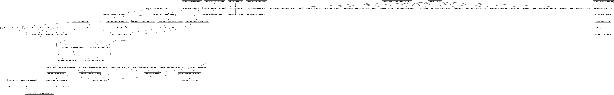
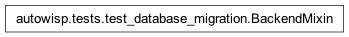
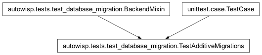
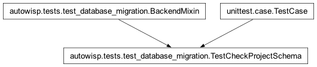
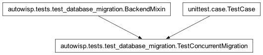
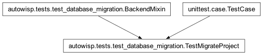
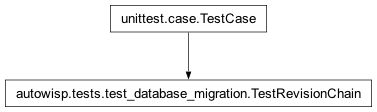
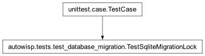
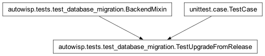

autowisp.tests.test_database_migration module
Class Inheritance Diagram

Unit tests for project database migration.
These need only a throwaway SQLite database, not a full project, so they
subclass unittest.TestCase directly.
- class autowisp.tests.test_database_migration.BackendMixin[source]
Bases:
object
Supplies clean project databases on whichever backend is under test.
SQLite gets a fresh file per engine; a server has only the one database, so it is emptied before each test instead.
- static add_stray_index(engine, name)[source]
Add an index the models do not declare, to produce drift.
Drift is provoked by adding something rather than removing it: the index this branch introduces cannot be dropped on MySQL (see
create_legacy_schema()).
- static create_legacy_schema(engine)[source]
Build the pre-migration schema: everything but the new index.
Not create_all-then-drop. InnoDB refuses to drop
image_observing_sessionbecause it is the index backing image’s foreign key onobserving_session_id– MySQL indexes a foreign key column whether or not anyone asked. Leaving the index out of the metadata is both portable and a truer picture of a 1.8.1 database, which never had it.
- make_engine(name='project.db')[source]
An engine for a clean project database on the current backend.
- reset_backend()[source]
Return the backend to empty part way through a test.
The asymmetry
setUplives with, reached one level in: a test that builds several schemas in turn – one per released version, say – gets a fresh file per engine on SQLite and the same database every time on a server, where the second iteration would otherwise start from whatever the first left behind.
- class autowisp.tests.test_database_migration.TestAdditiveMigrations(methodName='runTest')[source]
Bases:
BackendMixin,TestCase
The pre-Alembic helper still adds missing nullable columns.
It is private now and has exactly one caller – the baseline path of
migrate_project()– but it is what every legacy project passes through, so it keeps its own tests.- _make_old_project()[source]
Simulate an existing project: a
pipeline_runtable from beforecode_versionand theerrortable existed, holding a row.
- class autowisp.tests.test_database_migration.TestCheckProjectSchema(methodName='runTest')[source]
Bases:
BackendMixin,TestCase
The read-only gate every project open – and every worker – runs.
- test_does_not_mutate_a_stale_database()[source]
The gate must never issue DDL: workers run it concurrently.
- class autowisp.tests.test_database_migration.TestConcurrentMigration(methodName='runTest')[source]
Bases:
BackendMixin,TestCase
Two migrators racing on one database must not corrupt or crash it.
Exercises whichever lock the backend uses:
BEGIN IMMEDIATEon SQLite,GET_LOCKon a server. Alembic supplies neither.
- class autowisp.tests.test_database_migration.TestMigrateProject(methodName='runTest')[source]
Bases:
BackendMixin,TestCase
The three database states
migrate_project()has to handle.- test_backup_is_taken_before_migrating()[source]
SQLite is copied aside; a server is the administrator’s job.
- test_crash_window_between_ddl_and_version_update()[source]
DDL applied but the stamp lost – the state MySQL can crash into.
MySQL commits DDL implicitly, so a failure between the schema change and the
alembic_versionupdate leaves exactly this. Re-running must reach head rather than failing on an index that already exists.
- test_fresh_database_is_stamped_without_running_revisions()[source]
create_allbuilds the current schema, so nothing is applied.
- test_legacy_database_is_baselined_then_upgraded()[source]
An unstamped project reaches head in one pass, no user action.
- test_older_database_reaches_the_same_state()[source]
One missing a pre-baseline column still lands at head.
- class autowisp.tests.test_database_migration.TestRevisionChain(methodName='runTest')[source]
Bases:
TestCase
The revision chain is linear, ordered, and consistently named.
A fork is what actually breaks
upgrade head: two branches each adding a revision both point at the same parent, and Alembic then refuses to upgrade because the head is ambiguous. Catching that here means catching it in CI rather than at a user’s next project open.- test_numbers_increase_along_the_chain()[source]
Numeric prefixes strictly increase from base to head.
Catches a duplicate number and a revision merged out of order.
- test_revision_ids_fit_the_version_table()[source]
Ids stay within Alembic’s
VARCHAR(32)version column.SQLite ignores a declared length, so an over-long id passes there and only fails on MySQL, mid-upgrade, with “Data too long for column ‘version_num’” – after some revisions have already been applied. Cheaper to catch here.
- class autowisp.tests.test_database_migration.TestSchemaDrift(methodName='runTest')[source]
Bases:
BackendMixin,TestCaseThe revision chain and the ORM models describe the same schema.
A revision may not import the models – it has to keep meaning the same schema forever, while the models move – so anything a revision creates is declared twice, once in
data_modeland once in the revision. Nothing keeps the two in step except this check, which is why the plan calls for it rather than for sharing the definitions.Worth running per backend: the comparison is over reflected types, and what MySQL reports for a column is not what SQLite does.
- test_created_database_matches_the_models()[source]
Control: create_all builds from the models, so it must agree.
- test_drift_is_actually_detected()[source]
The check discriminates – an empty result means agreement.
Without this the two tests above would pass just as happily if get_schema_drift() always returned nothing.
- test_migrated_database_matches_the_models()[source]
A database the revisions built agrees with the models.
Note this cannot catch a model changed with no revision to match: the “before” state here comes from today’s metadata too, so both sides move together.
TestUpgradeFromReleaseis the test that catches that, by building the “before” state from released code.
- class autowisp.tests.test_database_migration.TestSqliteMigrationLock(methodName='runTest')[source]
Bases:
TestCase
The SQLite half of the migration lock really does exclude a second writer.
Alembic does no locking of its own, so without this two migrators can both read the same revision and both try to apply it. On SQLite the protection is
BEGIN IMMEDIATE, which pysqlite does not issue by default – it defersBEGINuntil the first write, leaving a window in which both have already read. The server equivalent isGET_LOCK, covered byTestConcurrentMigrationwhen pointed at one.- test_begin_immediate_excludes_a_second_writer()[source]
With the guard, the write lock is held from the start.
- class autowisp.tests.test_database_migration.TestTimestampTriggers(methodName='runTest')[source]
Bases:
BackendMixin,TestCaseEvery table carrying
timestampkeeps a trigger maintaining it.Nothing else checks this.
get_schema_driftis alembic’s comparison of tables, columns, indexes and constraints, and a trigger is none of those – so the schema checks elsewhere in this file pass unchanged with every trigger in the database dropped.- test_creating_the_schema_installs_all_of_them()[source]
Creation covers the provenance tables, not just data_model’s.
The triggers used to be attached to each class
import_table_definitionsdiscovered, and that discovery is a glob which does not descend intodata_model/provenance– so twelve tables carried atimestampcolumn that nothing ever updated. Comparing against the metadata catches a repeat.
- class autowisp.tests.test_database_migration.TestUpgradeFromRelease(methodName='runTest')[source]
Bases:
BackendMixin,TestCase
A database built by a released AutoWISP reaches today’s schema.
This is the test that catches a model changed without a revision to match. Every other check here builds its “before” state from today’s metadata, so a missing revision moves both sides together and goes unnoticed. Here the starting schema is built by the released code itself, checked out from its tag, so the revision chain is the only thing that can close the gap.
That released package is loaded in a subprocess: it defines the same module names as the code under test, so importing both into one interpreter would have whichever came first shadow the other.
- _build_release_schema(source, engine)[source]
Create the release’s schema, running that release’s own code.
- release_baselines = ('1.8.1', '2.0.0')
Released versions a project database may be upgraded from.
Add each new release tag as it ships; every entry gets its own upgrade-to-current check.
- test_a_value_too_long_to_keep_stops_the_migration()[source]
Narrowing a column refuses rather than truncating.
Refusing is the point: on a server not running in strict mode the ALTER would truncate the value silently.
Uses
condition_expression.expression(1000 -> 768 in0005) rather thanimage.raw_fname, which narrows identically in0004. The guard lives in the sharedresize_varchar_column, so either exercises it – but condition_expression has no foreign keys, whereas an image row needs an image_type and an observing session, and that in turn needs an observer, camera, telescope, mount, observatory and target. A server enforces every one of those, so the alternative was either a dozen rows of fixture or switching the checks off, and neither has anything to do with column widths.
- test_every_release_keeps_its_timestamp_triggers()[source]
Upgrading does not cost the database its triggers.
SQLite cannot alter a column in place, so
batch_alter_tablerebuilds the table and the drop takes its triggers with it. The rebuilt table is created by the revision rather than from the models, so nothing puts them back – a 1.8.1 database used to lose seven this way, and the check above could not see it.
- autowisp.tests.test_database_migration._git(*args, binary=False)[source]
Run git at the repository root; return output, or None if it fails.
The root, not this file’s directory:
git archiverefuses a pathspec reaching outside the current directory, so it has to be invoked from the top level.
- autowisp.tests.test_database_migration._repo_root()[source]
Return the repository’s top level, or None outside a checkout.
- autowisp.tests.test_database_migration.expected_timestamp_triggers()[source]
The triggers the models install when they create the schema.
Derived from the metadata rather than listed, so a table added later is covered without anyone remembering to extend a literal here.
- autowisp.tests.test_database_migration.on_server()[source]
Whether this run is pointed at a MySQL/MariaDB server.
The same switch the rest of the suite uses (see
autowisp.tests), so one variable turns everything onto a server rather than each part having its own idea of where to look. Setting it runs these scenarios against one too, covering the backend-specific paths – GET_LOCK, implicitly committed DDL, type comparison in the drift check – with the tests that already exist rather than a parallel copy that would drift out of step.